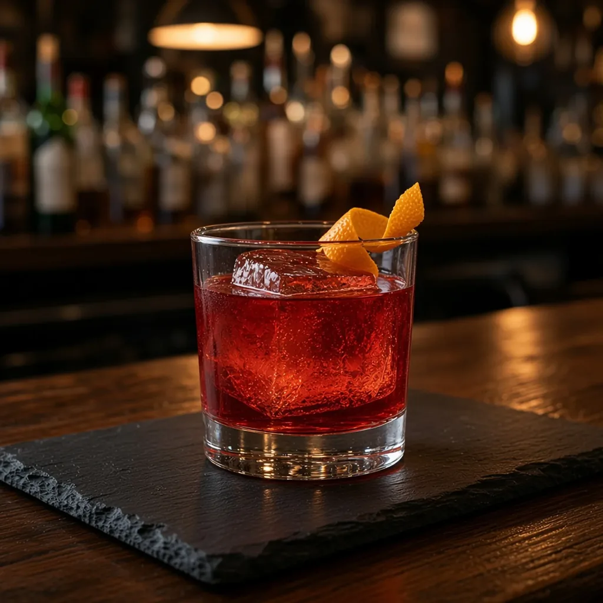
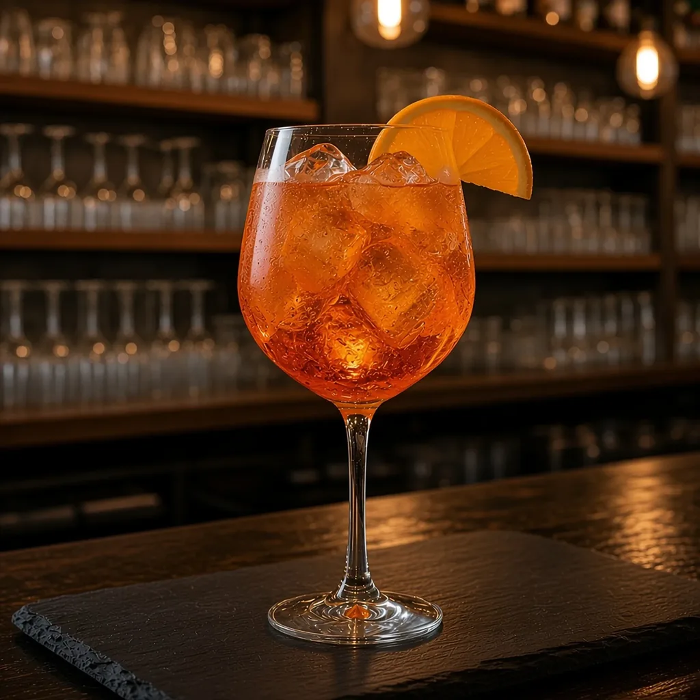

Daiquiri
The real one is three ingredients: rum, lime and sugar, shaken and served up.

The real one is three ingredients: rum, lime and sugar, shaken and served up.
Shake 2 oz coconut water with the lime juice and syrup.
Pour it, then start a room. Drinking is optional in every game.

NegroniEqual parts gin, bitter red aperitif and sweet vermouth. Bitter, strong and simple. Espresso MartiniVodka, coffee liqueur and fresh espresso, shaken until it has a thick foam.
Espresso MartiniVodka, coffee liqueur and fresh espresso, shaken until it has a thick foam.

Aperol SpritzThree parts prosecco, two parts orange aperitif, one part soda. PalomaTequila and grapefruit soda with lime and a pinch of salt.
PalomaTequila and grapefruit soda with lime and a pinch of salt.